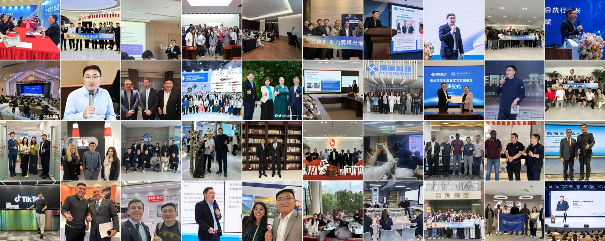

企业游学 · 产业调研 · 出海论坛 · 出海访谈 · 出海读书会 · 国际交流 · 海外考察 · 出海沙龙
The Complete Record — All 50+ Events

| KEY | 活动标题 TITLE | 日期 DATE | 链接 LINK |
|---|---|---|---|
| TOUR-01 | 走进佩蒂股份（300673.SZ）中国宠物食品龙头全球化布局考察｜海鑫汇企业游学 | 2026-06 | 查看原文 View source ↗ |
| TOUR-03 | 走进群核科技（00068.HK）｜杭州科技六小龙与AI产业全球化实践考察 | 2026-05 | 查看原文 View source ↗ |
| TOUR-04 | 走进纽威股份（603699.SH）｜中国工业阀门龙头企业全球化实践考察 | 2026-06 | 查看原文 View source ↗ |
| TOUR-05 | 走进智谱Z.AI（02513.HK）｜清华系大模型企业GLM系列技术与出海视角 | 2026-04 | 查看原文 View source ↗ |
| TOUR-07 | 走进博彦科技（002649.SZ）｜AI+数智技术赋能中国企业出海破局 | 2025-10 | 查看原文 View source ↗ |
| KEY | 活动标题 TITLE | 日期 DATE | 链接 LINK |
|---|---|---|---|
| FORUM-01 | 第二届海鑫汇出海年会｜和君小镇 | 2025-11 | 查看原文 View source ↗ |
| FORUM-02 | 第一届海鑫汇出海年会｜和君小镇 | 2024-12 | 查看原文 View source ↗ |
| FORUM-03 | 董立鑫协办 2025 年 WTC Singapore 服贸会首秀 | 2025-09 | 查看原文 View source ↗ |
| FORUM-04 | 董立鑫协办 2026 年 WTC Singapore 杨帆狮城 焕新启航 | 2026-07 | 查看原文 View source ↗ |
| FORUM-05 | 第二届海鑫汇出海年会｜和君小镇丨陈俊文（大麦哥） | 2025-11 | 查看原文 View source ↗ |
| KEY | 活动标题 TITLE | 日期 DATE | 链接 LINK |
|---|---|---|---|
| INTERVIEW-01 | 环世物流：中国物流企业如何服务中国企业出海？ | 2025-03 | 查看原文 View source ↗ |
| INTERVIEW-02 | 马来西亚：中国企业的东南亚支点怎么打？ | 2025-03 | 查看原文 View source ↗ |
| INTERVIEW-03 | 喀麦隆：中国企业的非洲支点怎么打？ | 2025-04 | 查看原文 View source ↗ |
| INTERVIEW-04 | 安哥拉：新能源全产业链投资非洲的门槛 | 2025-04 | 查看原文 View source ↗ |
| INTERVIEW-05 | 中国企业出海如何避坑？28个海外市场一线考察的实战结论 | 2025-10 | 查看原文 View source ↗ |
| INTERVIEW-06 | 新加坡：中国企业的全球市场七种打法怎么选？ | 2025-08 | 查看原文 View source ↗ |
| INTERVIEW-07 | 巴基斯坦：中国企业的南亚支点怎么打？ | 2025-09 | 查看原文 View source ↗ |
| INTERVIEW-08 | 泰国：中国企业的东南亚本地化经营怎么落地？ | 2025-07 | 查看原文 View source ↗ |
| KEY | 活动标题 TITLE | 日期 DATE | 链接 LINK |
|---|---|---|---|
| EXCHANGE-01 | 董立鑫与马尔代夫大使对话｜中马商业、投资与人才交流（英文） | 2025 | 查看原文 View source ↗ |
| EXCHANGE-02 | 董立鑫与 JMJ CEO Patrice Yantho 达成战略合作｜共促中国与喀麦隆及中非商业与投资交流 | 2024-09 | 查看原文 View source ↗ |
| EXCHANGE-03 | 法国与芬兰市场交流｜欧洲产业合作与企业出海新机遇 | 2026-01 | 查看原文 View source ↗ |
| EXCHANGE-04 | 走进墨西哥驻华大使馆｜中国企业进入拉美（墨西哥）市场合作交流 | 2025-10 | 查看原文 View source ↗ |
| EXCHANGE-05 | 走进伊拉克驻华大使馆｜中伊（伊拉克）产业合作与战后重建市场交流 | 2025-10 | 查看原文 View source ↗ |
| EXCHANGE-06 | 菲律宾市场交流｜菲律宾驻华参赞解读投资与商业机会 | 2025-11 | 查看原文 View source ↗ |
| EXCHANGE-07 | 世界贸易中心协会亮相服贸会｜WTC Singapore 东南亚市场合作与国际交流 | 2025-09 | 查看原文 View source ↗ |
| EXCHANGE-08 | 塞尔维亚市场交流｜中国企业进入欧洲的新机遇 | 2025-08 | 查看原文 View source ↗ |
| EXCHANGE-09 | 哈萨克斯坦国际交流｜中亚市场考察与中国企业出海合作 | 2026-05 | 查看原文 View source ↗ |
| KEY | 活动标题 TITLE | 日期 DATE | 链接 LINK |
|---|---|---|---|
| VISIT-01 | 斯图加特·Roto：一个仓库，让我提前十年看到中国物流的未来 | 2012 | 查看原文 View source ↗ |
| VISIT-02 | 2012 德国行外记：科隆与海德堡的两次停留 | 2012 | 查看原文 View source ↗ |
| VISIT-03 | 2012 德国纽伦堡 FENSTERBAU FRONTALE 考察：从德国门窗技术、标准到制造体系 | 2012 | 查看原文 View source ↗ |
| VISIT-04 | 吉隆坡：一座由华人矿工"挖"出来的城市 | 2013 | 查看原文 View source ↗ |
| VISIT-05 | 马尔代夫：一个国家把"一岛一酒店"做成了整个经济体的商业模式 | 2013 | 查看原文 View source ↗ |
| VISIT-06 | 斯图加特：第二次回到诺托，和一座"养马场"长出来的德国工业心脏 | 2014 | 查看原文 View source ↗ |
| VISIT-07 | 布鲁塞尔：一座总部比首都更多的城市 | 2015 | 查看原文 View source ↗ |
| VISIT-08 | 阿姆斯特丹：一座用风车填海造出来的金融首都 | 2015 | 查看原文 View source ↗ |
| VISIT-09 | 巴黎：一座连"修文物"都做成产业标准的城市 | 2015 | 查看原文 View source ↗ |
| VISIT-10 | 卢森堡：一个国家小到可以一天逛完，却装下了半个欧盟 | 2015 | 查看原文 View source ↗ |
| VISIT-11 | 冲绳：一个把"海洋"做成产业、把"现金"活成信任的地方 | 2015 | 查看原文 View source ↗ |
| VISIT-12 | 2016 年，又一次纽伦堡——诺托之夜，和这座城市的前世今生 | 2016 | 查看原文 View source ↗ |
| VISIT-13 | 慕尼黑：宝马的大腕，和中国车企正在补的全球化课 | 2016 | 查看原文 View source ↗ |
| VISIT-14 | 斯图加特·博世：一扇进不去镜头，却挡不住判断的工厂大门 | 2016 | 查看原文 View source ↗ |
| VISIT-15 | 斯图加特·奔驰博物馆：一座从 2006 年开馆后，骨架就没怎么变过的博物馆 | 2016 | 查看原文 View source ↗ |
| VISIT-16 | 斯图加特·诺托：从"创纪录"到"不满意"，两年里公司发生了什么 | 2016 | 查看原文 View source ↗ |
| VISIT-17 | 法兰克福：一半是欧洲央行，一半是华人生意场，中间还夹着两家我去调研的零售巨头 | 2016 | 查看原文 View source ↗ |
| VISIT-18 | 维也纳：一座靠音乐和购物两种方式"走出去"的城市 | 2017 | 查看原文 View source ↗ |
| VISIT-19 | 卡罗维发利：一座把温泉和瓷器都做成产业的波西米亚小城 | 2017 | 查看原文 View source ↗ |
| VISIT-20 | 布拉格：从查理大桥到斯柯达，一座城市的全球化两面 | 2017 | 查看原文 View source ↗ |
| VISIT-21 | CK 小镇：一座活在中世纪里的波西米亚童话 | 2017 | 查看原文 View source ↗ |
| VISIT-22 | 百威小镇：一座广场装下半座城，一条走去迪卡侬的路装下了捷克的三个时代 | 2017 | 查看原文 View source ↗ |
| VISIT-23 | 布拉迪斯拉发：多瑙河走廊上的一座小而倔强的首都 | 2017 | 查看原文 View source ↗ |
| VISIT-24 | 布达佩斯·河与夜——从国会大厦到"新能源匈牙利" | 2017 | 查看原文 View source ↗ |
| VISIT-25 | 布达城堡——一座宫殿的三次死亡与重生，和一部匈牙利产业史 | 2017 | 查看原文 View source ↗ |
| VISIT-26 | 纽伦堡：第三次站在这里，看到的不再只是产品，是中国企业的腰板 | 2018 | 查看原文 View source ↗ |
| VISIT-27 | 慕尼黑：一座"很德国"的城市，和宝马刚刚亮出的电动化底牌 | 2018 | 查看原文 View source ↗ |
| VISIT-28 | 斯图加特·诺托：家族退到幕后，一位中国工程师，和一道 U 槽与 C 槽之间的鸿沟 | 2018 | 查看原文 View source ↗ |
| VISIT-29 | 济州岛：一座火山岛，一间免税店，和一代人的青春记忆 | 2019 | 查看原文 View source ↗ |
| VISIT-30 | 越南胡志明市产业考察｜中国企业全球化实践调研报告 | 2025-10 | 查看原文 View source ↗ |
| VISIT-31 | TikTok马来西亚考察｜中国互联网企业全球化实践研究 | 2025-10 | 查看原文 View source ↗ |
| VISIT-32 | 马来西亚新山市场考察｜东南亚产业与商业机会调研 | 2025-08 | 查看原文 View source ↗ |
| VISIT-33 | 博彦科技新加坡考察｜中国IT服务企业全球化实践启发 | 2025-08 | 查看原文 View source ↗ |
| VISIT-34 | 泰国曼谷产业考察｜群核科技（00068.HK）东南亚市场实践研究 | 2025-08 | 查看原文 View source ↗ |
| VISIT-35 | 马来西亚与印度尼西亚产业考察｜东南亚投资机会深度调研 | 2025-03 | 查看原文 View source ↗ |
| VISIT-36 | 匈牙利产业考察｜中国企业进入中东欧市场的真实落地路径 | 2026-01 | 查看原文 View source ↗ |
| KEY | 活动标题 TITLE | 日期 DATE | 链接 LINK |
|---|---|---|---|
| SALON-04 | 北京·中国企业去巴基斯坦怎么落地？南亚市场的机会、门槛与合规要点 | 2025-12 | 查看原文 View source ↗ |
| SALON-07 | 香港·新能源企业出海的资本路径：国际资本市场如何看中国新能源 | 2025-07 | 查看原文 View source ↗ |
| SALON-09 | 北京·2025 全球市场展望：出海企业的人才战略与区域机会 | 2025-07 | 查看原文 View source ↗ |
| SALON-13 | 宁波·制造企业出海：从代工到自建海外渠道的实战路径 | 2025-03 | 查看原文 View source ↗ |
| SALON-14 | 杭州·企业出海：跨境电商与数字贸易的全球化打法 | 2025-03 | 查看原文 View source ↗ |
| SALON-15 | 赣州·企业出海：家具家居产业如何打开海外渠道 | 2025-03 | 查看原文 View source ↗ |
| SALON-16 | 福州·跨境电商出海联动：企业如何借力平台打通海外市场 | 2025-03 | 查看原文 View source ↗ |
| KEY | 活动标题 TITLE | 日期 DATE | 链接 LINK |
|---|---|---|---|
| REVIEW-01 | 《大出海》读书会｜中国企业全球化战略与产业出海实践 | 2026-04 | 查看原文 View source ↗ |
| REVIEW-02 | 《VUCA时代的跨文化领导力》读书会｜国际化领导力实践分享 | 2026-03 | 查看原文 View source ↗ |
| REVIEW-03 | 《出海战略》读书会｜中国企业国际化战略实践（二） | 2026-02 | 查看原文 View source ↗ |
| REVIEW-04 | 《出海战略》读书会｜中国企业国际化战略实践（一） | 2026-01 | 查看原文 View source ↗ |